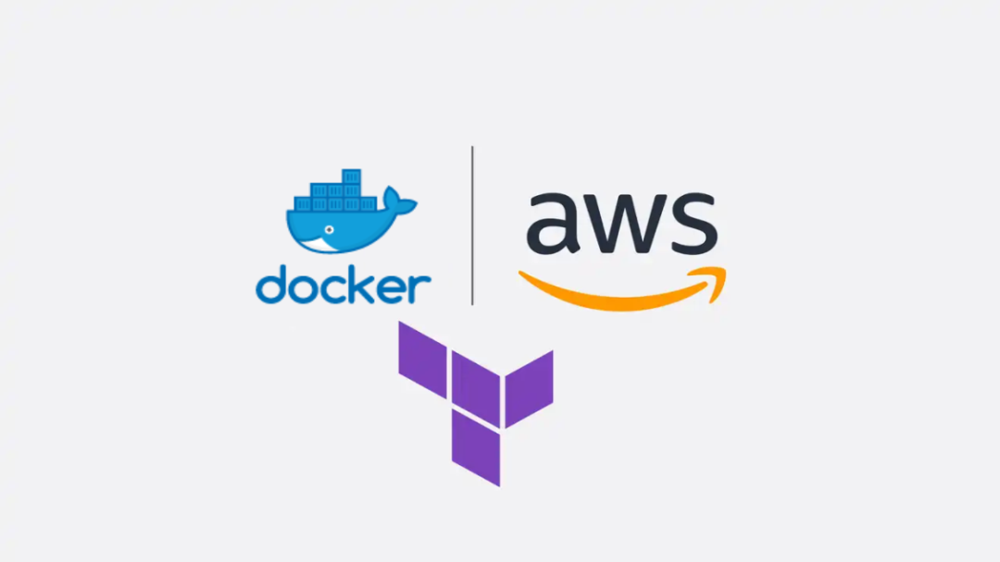
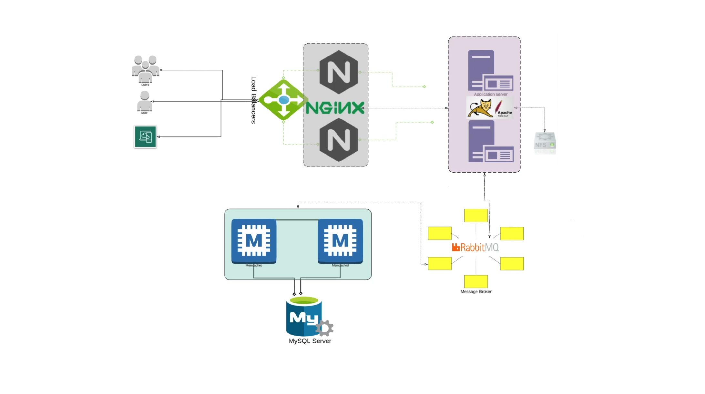
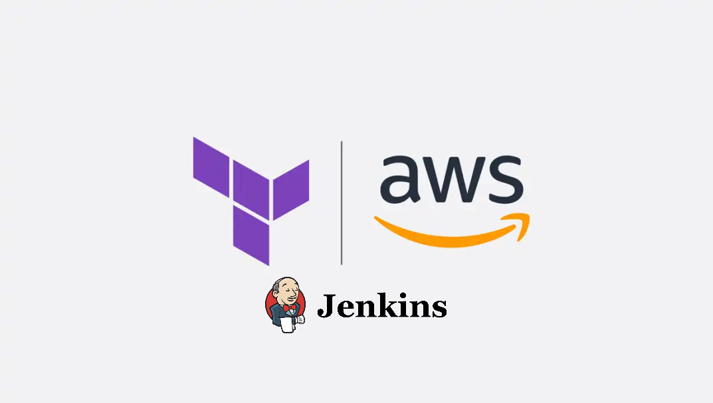
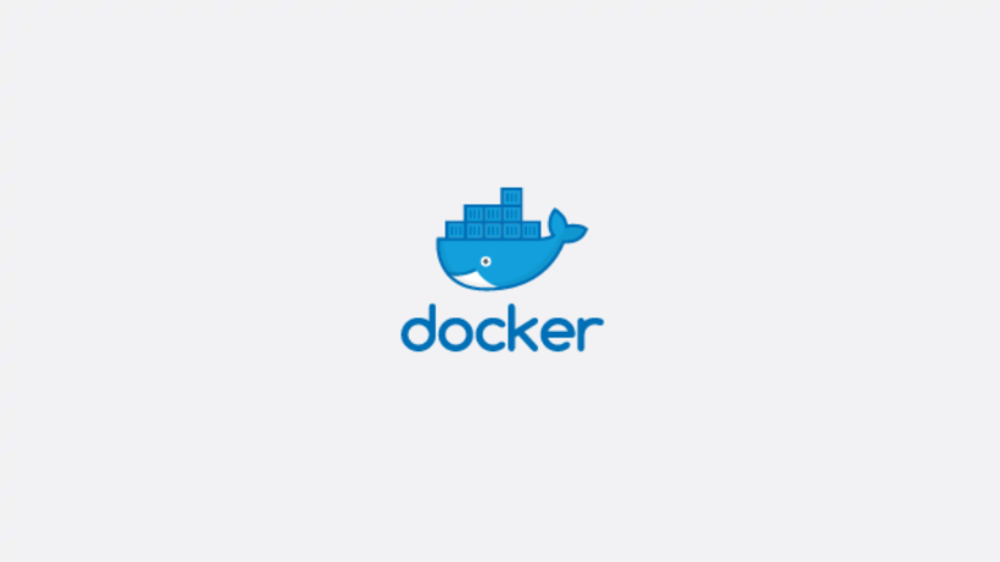

DevOps & Automatización
Infraestructura como código, contenedores y pipelines para desplegar de forma repetible y segura.
Ver experienciaDisponible para nuevas oportunidades
Soy Reymer García, Data Analyst y profesional de infraestructura IT. Diseño soluciones automatizadas, convierto información en decisiones y mantengo operaciones tecnológicas confiables.
01 — Perfil profesional
La tecnología funciona mejor cuando es entendible, medible y sostenible.
Soy dominicano, apasionado por la tecnología y los videojuegos. Durante más de 5 años he trabajado en Soporte Técnico IT, hardware, software, redes y entornos Linux/Windows. En los últimos 2 años he enfocado mi crecimiento en DevOps, tecnologias Cloud y análisis de datos.
Mi enfoque combina resolución de problemas, automatización y métricas operativas para ayudar a los equipos a trabajar con más eficiencia y confianza.
Curiosidad técnica, pensamiento analítico y una mentalidad de mejora continua para convertir retos operativos en resultados concretos.
02 — Cómo puedo ayudarte
Infraestructura como código, contenedores y pipelines para desplegar de forma repetible y segura.
Ver experienciaOrganizo datos y métricas en información útil para detectar oportunidades y tomar mejores decisiones.
Ver experienciaSoporte técnico, sistemas y redes con foco en estabilidad, documentación y una buena experiencia de usuario.
Consultar disponibilidad03 — Stack técnico
04 — Proyectos seleccionados

Infraestructura como códigoArquitectura de página estática desplegada con Terraform sobre EC2, VPC y ELB.
Ver repositorio
Arquitectura webEntorno reproducible con Vagrant, RabbitMQ, Nginx, Tomcat, Maven, Memcached y MySQL.
Ver repositorio
Jenkins CI/CDImplementación de Jenkins CI/CD en AWS para automatización del despliegue continuo de aplicaciones.
Ver repositorio
ContenedoresPráctica de construcción y gestión de imágenes y contenedores para distintos entornos y servicios.
Ver repositorio05 — Formación
06 — Contacto
Disponible a oportunidades en Data Analytics, DevOps, Cloud y operaciones IT.